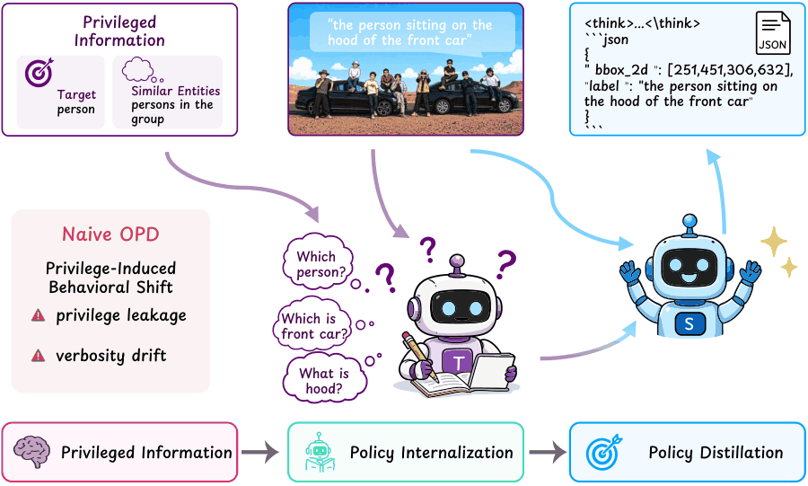
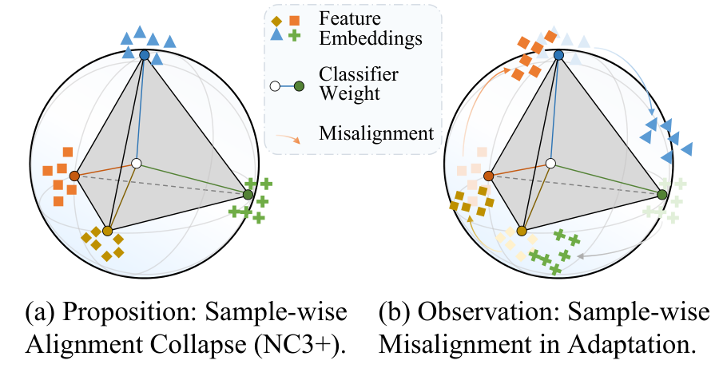
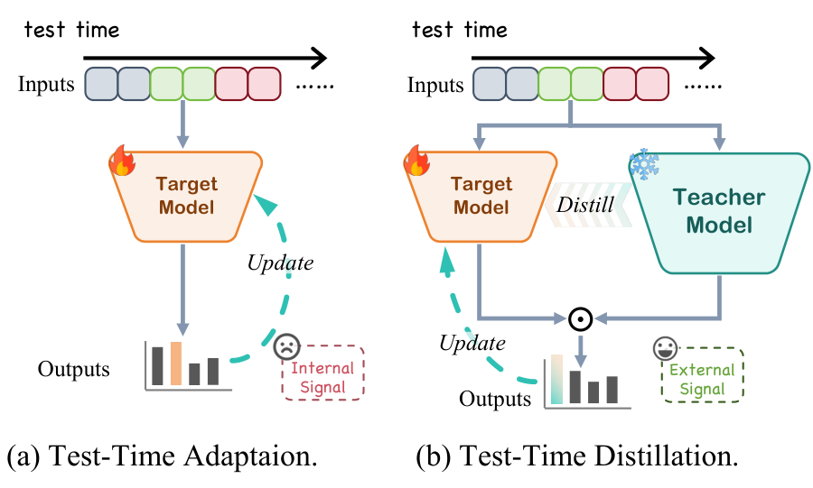
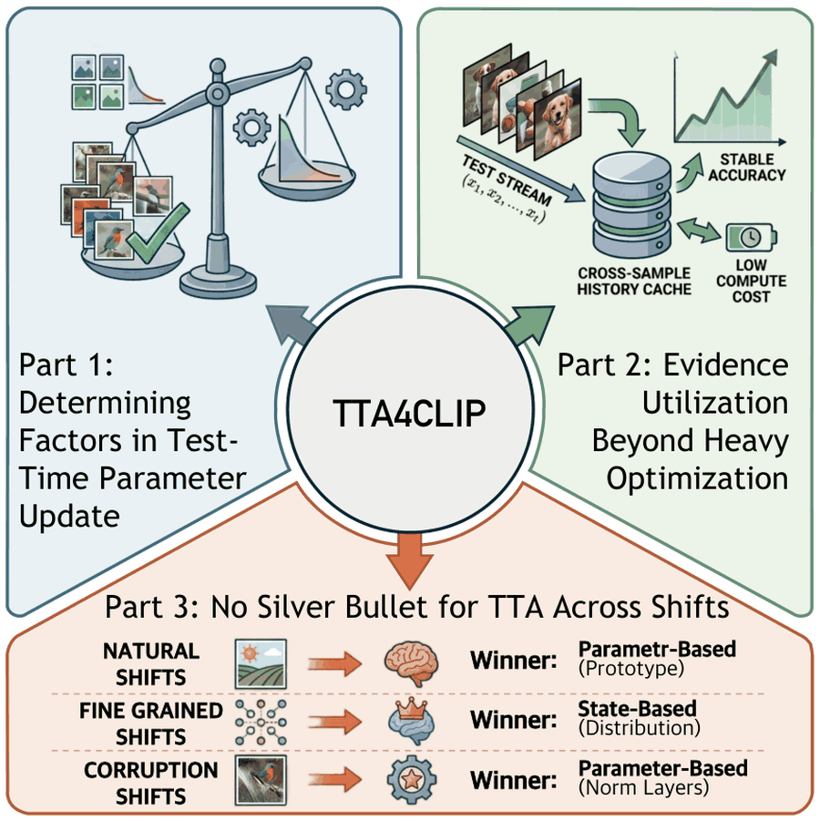
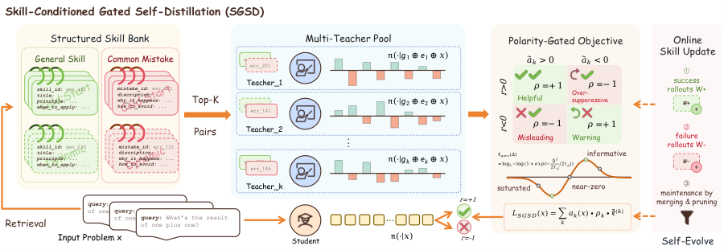
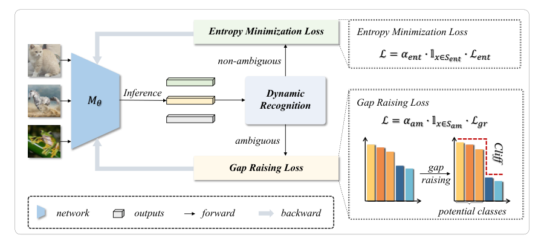
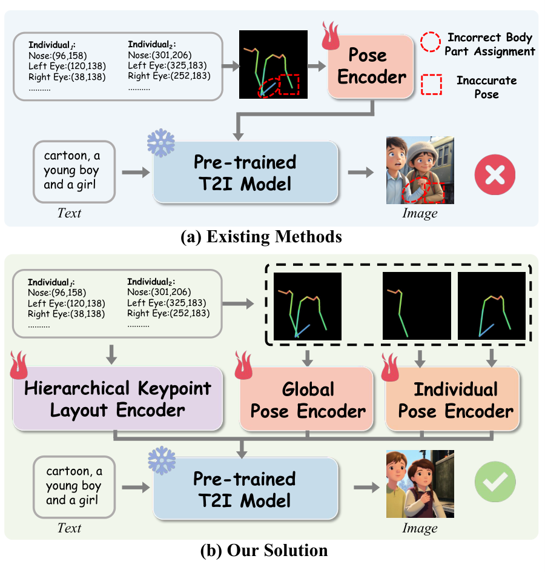

I
- Email chen-x25@mails.tsinghua.edu.cn
- Office Tsinghua SIGS, Shenzhen, China
Xiao Chen 陈骁
M.Eng. Student, Computer Technology
Tsinghua Shenzhen International Graduate School, Tsinghua University
Recursive Self-Improvement · Agentic Learning · Multimodal Intelligence
I am a master's student in Computer Technology at Tsinghua Shenzhen International Graduate School (SIGS), advised by Prof. Zhi Wang, and currently a research intern at Tencent Youtu Lab. I received my B.Eng. in Software Engineering from Sichuan University in 2025.
I study how intelligent systems keep improving after training ends— through self-generated signal, interaction and feedback, and grounding in the visual world.
Happy to discuss research or collaborations—feel free to reach out by email.
Research
One question, three angles: how can an intelligent system keep improving after training ends?
II
Agentic Learning & Post-Training
How should agents learn from interaction and feedback?
Reinforcement learning and post-training for long-horizon behaviour: reward design, on-policy distillation, credit assignment, and turning accumulated experience into capability.
- GroundPO
- Computer-use agents in progress
III
Multimodal Intelligence
How do models perceive and reason about the visual world?
Fine-grained perception, visual grounding, and reasoning—together with the benchmarks needed to measure them, spanning natural images to medical imaging and controllable generation.
- Test-Time Adaptation
- Continual Adaptation
- Self-Distillation
- RL & Post-Training
- Grounding & Reasoning
- Self-Improving Multimodal Agents
News
- 2026.09Submitted GroundPO: Policy Optimization via Internalization and Distillation for Visual Grounding to ICLR 2027.
- 2026.09TTABC accepted to NeurIPS 2026 and SGSD to EMNLP 2026.
- 2026.04Started as a research intern at Tencent Youtu Lab.
- 2026.02Three papers — NCTTA, TTD and ControlPose — accepted to CVPR 2026.
- 2025.09Started my M.Eng. at Tsinghua SIGS, advised by Prof. Zhi Wang.
- 2025.06Graduated from Sichuan University as an Outstanding Graduate of Sichuan Province (rank 2/207).
- 2024.07Cliff accepted to ECAI 2024.
Selected Publications
* denotes equal contribution; bold denotes my name. A full list is available on Google Scholar.
-

-

-

-

-

-

-

Earlier Work
Earlier research includes medical image analysis, radiotherapy dose prediction, semi-supervised domain adaptation, and visual computing.
- Triplet-constraint Transformer with Multi-scale Refinement for Dose Prediction in Radiotherapy ISBI 2024
- D3Net: A Distribution-Driven Deep Network for Radiotherapy Dose Prediction IEEE TRPMS
Education & Experience
-
2026.04 – Present
Tencent
Research Intern, Youtu Lab
Post-training of multimodal LLMs for reasoning-intensive grounding; benchmark design and evaluation.
-
2025.09 – Present
Tsinghua University
M.Eng. in Computer Technology, Shenzhen International Graduate School
Advised by Prof. Zhi Wang, previously as a research intern in the same group (2024–2025). Test-time and continual adaptation under dynamic target domains; multi-model collaborative inference.
-
2023.07 – 2023.07
National University of Singapore
Visual Computing Summer Workshop
Rated A; Outstanding Student.
-
2020.09 – 2025.06
Sichuan University
B.Eng. in Software Engineering, Software Engineering College
Rank 2/207 · Honors Bachelor Program (top 1%). Undergraduate researcher in the Computer Vision & Medical Imaging Lab (2022–2024), working on radiotherapy dose prediction, domain-adaptive tumor segmentation, and early work on test-time adaptation.
Selected Honors
- 2021, 2023National Scholarship, Ministry of Education of China (twice)
- 2025Outstanding Graduate of Sichuan Province
- 2025Tencent Rhino-Bird Open-Source Talent Program — Outstanding Student
- 2025Sichuan University Tencent Scholarship
- 2023Meritorious Winner, Mathematical Contest in Modeling (MCM/ICM)
- 2023First Prize, National College Computer Capability Challenge (Programming Track)
- 2022First Prize (Sichuan Province), China Undergraduate Mathematical Contest in Modeling
- 2024First Prize (Sichuan Province), China Collegiate Computer Design Contest
Contact
- Alternate
- cx_scu@foxmail.com
- GitHub
- github.com/Cevaaa
- Scholar
- Google Scholar
- Address
- Tsinghua SIGS, Nanshan District, Shenzhen, China